Desde designs exclusivos até protótipos funcionais, capacitamos você a materializar suas ideias e
impulsionar a inovação, tornando a revolução 3D acessível e emocionante. Venha fazer parte dessa
transformação e comece a moldar o futuro a partir das suas ideias.
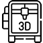
Impressoras FDM
Nunca foi tão fácil encontrar a melhor impressora 3D para você, com máquinas de todas as formas, tamanhos
e faixas de preço, de modo que existe uma máquina ideal para cada necessidade.
As impressoras 3D de resina já estão muito bem estabelecidas. Hoje em dia, hobistas domésticos, makers e
profissionais podem escolher uma máquina compacta e de alta resolução por menos de USD $200 e fazer
impressões incrivelmente detalhadas em pouco tempo.
Em impressão 3D, o termo “fatiamento” se refere ao processo de preparação de um modelo digital
tridimensional para a impressão 3D. Softwares de fatiamento, ou slicers 3D, são semelhantes a softwares
CAM em termos de funcionalidade, já que eles fazem a ponte entre o mundo digital e o real.
Ter em mãos uma impressora 3D nos abre a janela para um universo de possibilidades. Seja para algo mais
funcional, como próteses, ou algo mais recreativo, como peças de jogos de tabuleiro, há uma necessidade
universal que atravessa todas essas possibilidades: o filamento para impressora 3D.
A impressão 3D é um assunto que, cada vez mais, vai ocupar espaço nos noticiários e na sua própria vida,
tanto pessoal quanto profissional. Essa técnica, que parecia integrar um futuro distante há poucos anos, vem
se tornando presente na rotina de governos, empresas e até pessoas comuns.
Desde pequenos objetos, próteses, órgãos e até edificações ganharam, na prototipagem rápida, uma nova maneira
de produção. Ao mesmo tempo, surgem novas oportunidades para diferentes setores, como a construção civil e a
medicina, que têm acesso a materiais de um jeito mais rápido e simples.
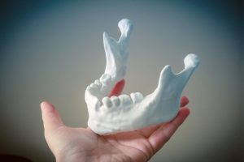
Medicina
No campo da medicina, pacientes já receberam próteses impressas em 3D para substituir ossos de diversas
partes do corpo. Materiais como plástico e titânio são utilizados para compor as peças, feitas sob
medida para cada pessoa.
Por possibilitar a fabricação de peças para uma infinidade de equipamentos, a impressão 3D vem sendo
empregada em indústrias de diversos segmentos. Produtos inteiros ou partes já foram construídas para
móveis, joias e bijuterias, roupas, acessórios, sapatos e artigos de jardinagem.
A impressão 3D permite a fabricação de peças com formatos que não poderiam ser feitos em outro processo
de fabricação. Por isso, pode ser muito explorada na área de objetos para casa.
A impressão 3D permite tornar reais possibilidades que antes só existiam no plano das ideias. Com a ajuda
de um designer, você pode transformar sua ideia num produto exclusivo, que tenha a cara da pessoa que
você quer presentear.
Nunca foi tão fácil encontrar a melhor impressora 3D para você, com máquinas de todas as formas, tamanhos e
faixas de preço, de modo que existe uma máquina ideal para cada necessidade.
Por apenas USD $200, você consegue comprar uma máquina altamente capaz e compacta que pode tranquilamente
materializar suas ideias com ótima qualidade. Da mesma forma, jogadores de board games conseguem produzir
miniaturas incrivelmente detalhadas com facilidade através de impressoras 3D de resina de baixo custo.
Makers sofrendo com falta de espaço podem ter impressão 3D, CNC e gravação a laser tudo em uma única
máquina, e aqueles que precisam de uma impressora 3D grande para projetos grandiosos também estão bem
cobertos. E a lista de alternativas continua.
São inúmeras as possibilidades na impressão 3D, e nós testamos muitas máquinas para poder trazer nossa
opinião sobre as melhores impressoras 3D que você pode comprar agora. Tenha em conta que os valores aqui
dispostos refletem o mercado no momento da publicação e não incluem os custos de frete e de taxas de
importação.
Especificação
Ender 3 S1
Tycoon Slim
Super Race
Velocidade de impressão
150mm/s
100mm/s
200mm/s
Área de impressão
220mm x 220mm x 270mm
240mm x 240mm x 300mm
260mm x 266mm x 330mm
Nivelamento automático
CR Touch
BL Touch
Sim (?)
Retomada de impressão / Sensor de fim de filamento
Sim / Sim
Sim / Sim
Sim / Sim
Preço (aproximado)
R$ 2.300,00
R$ 1.900,00
R$ 4.000,00
Imagem
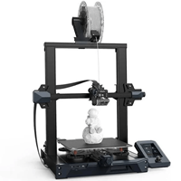
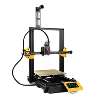
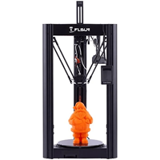
Fatiadores
O fatiador 3D é um programa que vai trabalhar como um tradutor do seu projeto para a impressora. Após inserir o
arquivo (STL, M3F ou OBJ), o software vai converter esse arquivo original para um especial no formato GCODE, de
forma a delinear as coordenadas em um painel tridimensional. Isso quer dizer que o fatiador vai separar seu
projeto em várias faixas horizontais e mapear o caminho que o bico da impressora 3D deve percorrer, linha por
linha e camada por camada.
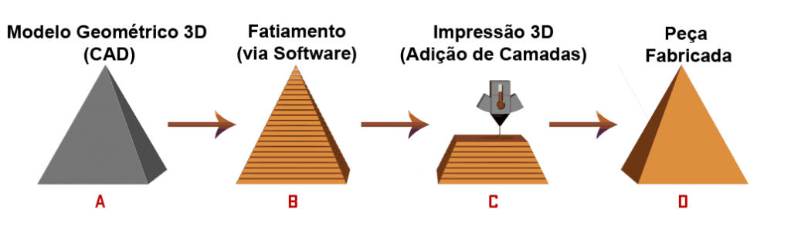
Além deste trajeto, no fatiador 3D você define:
Temperatura de mesa e do bico;
Velocidade do bico;
Altura das camadas;
Quantidade de preenchimento;
Entre outros fatores.
O fatiamento é a segunda de quatro etapas que fazem parte do processo completo de impressão 3D. Para ser fatiada,
é preciso que a peça tenha sido criada antes num software de modelagem digital. Confira abaixo uma explicação
sobre cada um dos estágios:
modelo 3D: Nesta primeira etapa, um arquivo digital da peça é criado em um software de modelagem 3D e serve
como base para o restante do processo. Programas como o Solidworks, CATIA e o Solid Edge são alguns dos mais
utilizados hoje em dia;
fatiamento: Feita a modelagem, o arquivo é transformado pelo fatiador 3D no formato GCODE. O fatiamento é a
hora de definir os parâmetros de impressão e as características que a peça vai ter;
impressão: Esse é o momento que a impressora 3D realmente começa a funcionar. Ela inicia a fabricação do
objeto de acordo com as coordenadas exatas definidas pelo fatiador 3D;
finalização: Após a impressão do objeto, é normal que alguma parte precise de finalização. Esse acabamento
pode ser por meio de lixamento, remoção de material (Raft 3D, Skirt ou Brim) ou uso de solventes.
Ainda que você esteja utilizando uma impressora mais simples e iniciante, você conseguirá compensar esse fato ao
escolher o programa certo de acordo com o seu planejamento.
Há diversas opções de programas e softwares de fatiamento 3D e grande parte deles são gratuitos. Confira abaixo
os melhores softwares de acordo com nossa equipe e descubra qual o fatiador 3D ideal para você.
Simplify3D pago
Cura 3D gratuito
Slic3r gratuito
Prusa Slicer gratuito
ChiTu Boxgratuito/pago
filamentos
Os filamentos para impressora 3D têm características e propriedades diferentes, e conhecer mais sobre isso é
muito importante para garantir que suas peças atendam aos requisitos do projeto. Se você quer criar uma peça
que vá sofrer um esforço de tração, por exemplo, deve escolher um filamento que tenha maior resistência.
Se a peça ficará exposta ao sol, a resistência térmica já se torna fundamental. Esse tipo de questionamento
deve ser feito por você sempre antes de iniciar a impressão 3D. Escolher o melhor filamento para impressora
3D é meio caminho para o sucesso com sua impressora!
Acrinolitrina Butadieno Estireno. Este é o nome técnico para o filamento ABS. Junto com o PLA é um material
vastamente utilizado para impressão 3D. Suas características, como a alta resistência mecânica, térmica e
facilidade para dar acabamento conquistam fãs em todo o mercado. Para imprimir com o filamento ABS é
indicado que a impressora 3D seja fechada e obrigatoriamente tenha mesa aquecida. Sem esse aquecimento a
peça não fixará à mesa, descolando e interrompendo a impressão
Características especiais
faixa de temperatura de extrusão: 220 a 240°C;
temperatura da mesa: 100 a 110°C;
ótima resistência mecânica e térmica, sendo possível criar peças que ficarão expostas ao sol;
ideal para criação de peças que sofrerão desgaste ou teste de carga, como engrenagens e encaixes;
apresenta diversas possibilidades de acabamento, como lixa, acabamento com acetona, entre outros.
PLA
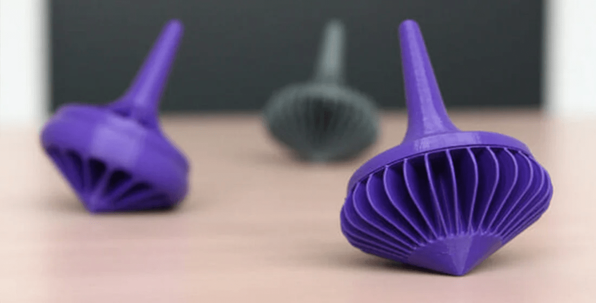
Poliácido Láctico, ou simplesmente PLA, é um dos materiais mais utilizados na impressão 3D. A facilidade de
utilização é uma causa dessa vasta utilização. Este filamento pode ser utilizado em uma gama extensa de
impressoras, que não precisam de mesa aquecida ou gabinete fechado. O filamento PLA é indicado para produzir
peças com detalhes, sem necessidade de acabamento posterior. A produção da matéria-prima é feita com
materiais renováveis, como amido de milho. Durante a impressão não é emitido um cheiro forte, ao contrário
do ABS, por exemplo.
Características especiais
faixa de temperatura de extrusão: 200 a 220°C;
temperatura da mesa: até 70°C (não é obrigatório);
elevada dureza superficial, mas quebradiço;
ideal para criação de protótipos que não sofrerão com desgaste ou teste de carga;
material mais indicado para iniciantes devida à facilidade de impressão e aceitação da maioria das
impressoras.
PETG
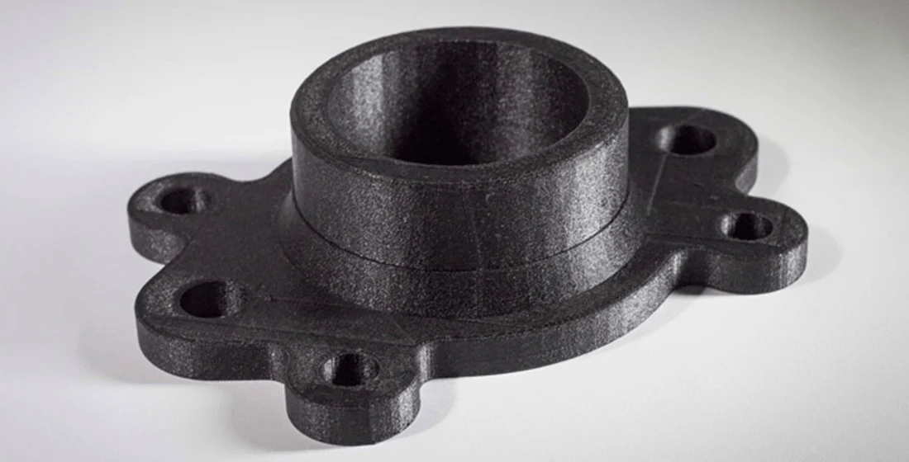
Polietileno Tereftalado com Glicol é o nome técnico do filamento PETG. Muito utilizado para projetos de
engenharia devido às suas características, esse é um material nobre da impressão 3D. Sua utilização vem
crescendo bastante no mercado, principalmente na Europa e Estados Unidos. O filamento PETG é considerado
FoodSafe, com certificações que garantem a possibilidade de imprimir peças que entrem em contato com
alimentos sem problemas. Além disso, sua resistência mecânica e química chamam a atenção dos usuários. Ele
pode ser utilizado em impressoras abertas e não sofre deformação durante o resfriamento.
Características especiais
faixa de temperatura de extrusão: 235 a 255°C;
temperatura da mesa: até 85°C;
ótima resistência mecânica e química;
ideal para criação de peças que sofrerão desgaste ou teste de carga.
Nylon
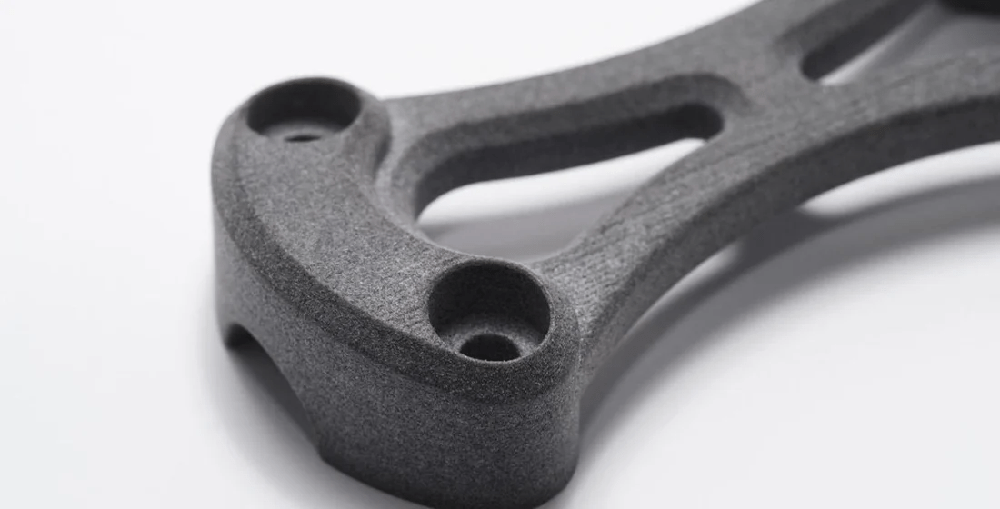
Com o nome técnico de Poliamida, o Nylon é um material de alta resistência mecânica e térmica. Por ser um
material que resiste a altas temperaturas e pressão, o Nylon é comumente utilizado na área de engenharia
para a fabricação de peças mecânicas. O filamento Nylon deve ser usado em impressoras fechadas, com mesa
aquecida. É preciso usar produto de fixação para a superfície, de preferência a fita Kapton Azul. Além
disso, recomendamos o uso de Brim.
Características especiais
faixa de temperatura de extrusão:235ºC a 270ºC, a depender da velocidade da impressora;
temperatura da mesa: 100 a 110°C a 130ºC;
ótima resistência térmica, sendo possível criar peças que ficarão expostas ao sol;
resistente a altas temperaturas e a vários produtos químicos. Pode ser pós-processado com facilidade
por ferramentas comumente usadas para usinagem de metais;
é difícil de quebrar e fácil de pintar, podendo ser colorido com corantes de roupas preparados com
bases ácidas.
Tritan
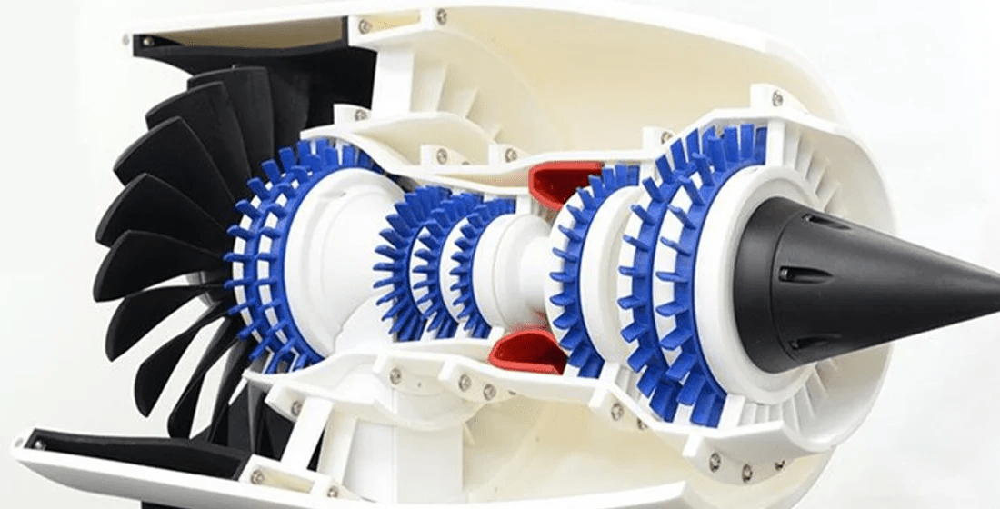
Feito de copoliéster, o Tritan é um filamento durável que permite a construção de peças com alta
resistência. Isso porque possui uma elevada temperatura de resistência ao calor. O Tritan é indicado
para aqueles que tem uma maior experiência com impressão 3D.
Uma característica importante do filamento Tritan é a necessidade de uma temperatura de extrusão mais
alta. Isso cria uma dificuldade para impressoras que têm tubo teflon, uma vez que esse material tem
resistência térmica menor do que a de extrusão. As peças impressas com Tritan possuem excelente
durabilidade, resistência à tração, dureza e resistência térmica.
Características especiais
faixa de temperatura de extrusão: 260 a 280°C;
temperatura da mesa: 100 a 110°C;
ótima resistência térmica, sendo possível criar peças que ficarão expostas ao sol;
ideal para criação de peças que sofrerão desgaste ou serão expostas à alta temperatura como peças
automotivas e protótipos funcionais;
por possuir baixa contração e quase nenhum warping, é ideal para a impressão de peças grandes.
Componentes de uma impressora 3D
As impressoras 3D ganharam popularidade pouco depois de estarem disponíveis para uso comercial. Eles
acabaram por ser muito úteis para os fabricantes que procuram uma maneira fácil de criar peças para os
itens que eles fizeram. A primeira impressora 3D foi criada há 30 anos, e desde então, este maravilhoso
dispositivo tomou o mundo de surpresa.
Então, o que realmente é preciso para criar uma impressora 3D? Que componentes compõem este dispositivo
útil e simples? Aqui você aprenderá sobre os componentes que se unem para criar uma impressora 3D e como
eles trabalham juntos para tornar possível a impressão tridimensional.
Estrutura
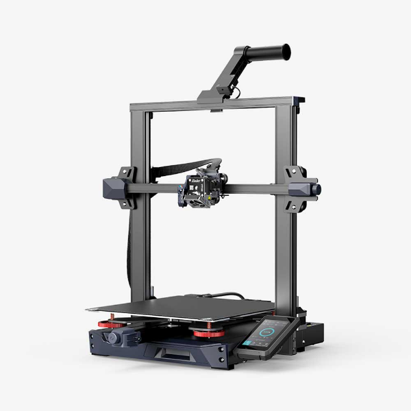
A primeira e a maior parte é a estrutura. De estrutura, referimo-nos a todas as peças que compõem
a
base da impressora e sobre a qual se montam todos os demais elementos. Talvez seja óbvio, mas
uma
boa estrutura é um aspeto totalmente essencial e fundamental para obter bons resultados nas
nossas
impressões, pois determina a rigidez da impressora.
As estruturas mais modernas da atualidade, graças à Creality e a sua vasta gama de produtos, são
as
estruturas formadas com perfis de alumínio. Esta opção é uma das mais ideais, pois os perfis
podem
ser montados de forma muito cómoda utilizando poucos parafusos. Além disso, a usinagem precisa
destes perfis significa que praticamente não há folga na nossa estrutura. Como se não fosse
pouco,
os perfis de alumínio são uma opção bastante barata, portanto são uma opção altamente
recomendada.
Extrusora
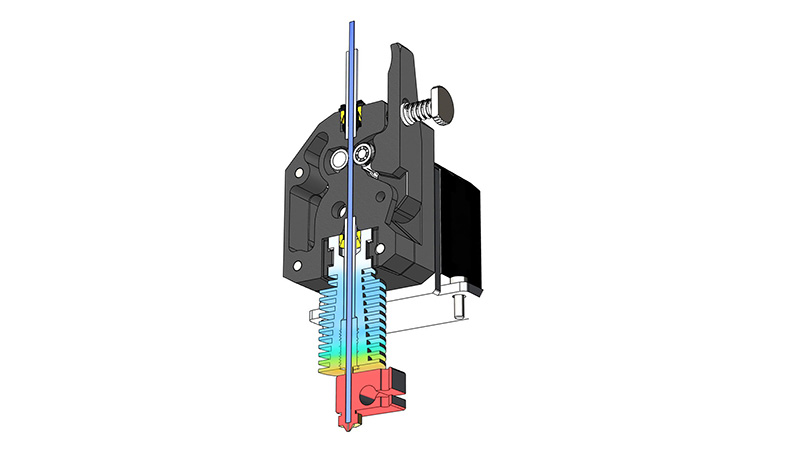
A extrusão é o componente que muitos consideram a parte mais importante de uma impressora 3D.
Embora
seja discutível, o que não se pode negar é que a extrusão geralmente é uma das peças que cria um
engarrafamento. É comum ver impressoras onde o resto dos componentes funciona corretamente, mas
obtêm-se resultados insatisfatórios (ou não se obtêm resultados) devido a alguma falha na
extrusão.
Em geral, engloba-se na “extrusão” o extrusor propriamente dito e o bloco de aquecimento. Ambas
partes são essenciais, e devemos colocar a máxima qualidade que nosso bolso permitir.
No que diz respeito hotend, está normalmente constituído por um dissipador de calor, uma garganta
ou
barrel e, finalmente, o bloco de aquecimento com o nozzle. De todos estes elementos, se
tivéssemos
que priorizar algum deles, para poupar no resto, seriam a garganta e o nozzle. Recomendamos
comprar
a garganta ou barrel e o nozzle da melhor qualidade, por exemplo, E3D ou Microswiss, pois a
diferença com os clones baratos que podemos encontrar no Aliexpress é enorme
Eletrônica
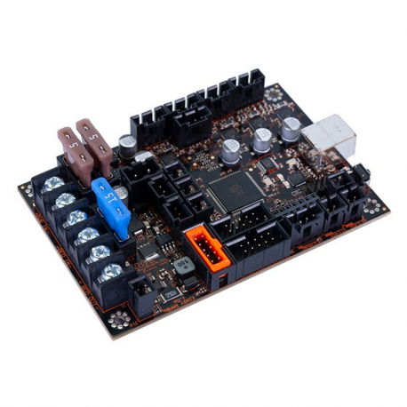
Inicialmente, todas as impressoras eram controladas por uma placa composta por uma RAMPS e um
Arduino, ambas placas de uso geral. Com o tempo, desenvolveram-se placas específicas para
impressoras 3D e cada marca possui a sua própria placa.
A maioria das placas é de qualidade suficiente e as únicas diferenças que notaremos como
utilizadores
estão nos drivers. Estes drivers são os componentes que se encarregam de fornecer a potência
necessária aos motores, e existem muitos tipos, sendo os melhores e os mais modernos, os
Trinamics.
Dentro desta gama, existem muitos modelos, mas a maioria deles oferecem-nos vantagens como muito
menor ruído (de verdade, mesmo muito menor), a capacidade de funcionar sem limites de percurso
ou a
capacidade de detetar choques ou congestionamentos. Se puderem pagar e a vossa impressora tiver
uma
placa com drivers intercambiáveis, invista em alguns drivers trinamics. Uns básicos como os 2208
significarão uma enorme melhoria no ruído da vossa impressora.
Mesa aquecida
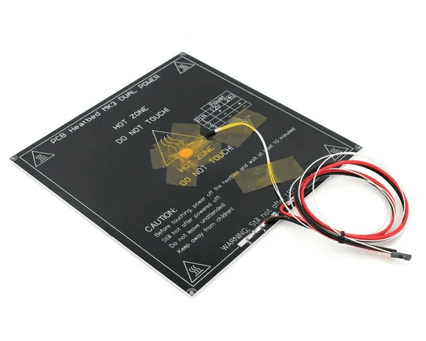
A cama ou mesa de impressão é onde o objeto 3D final é formado. O material de filamento é
depositado
aqui, assim como a tinta é colocada no papel em impressoras 2D tradicionais. As camas de
impressão
vêm em duas variedades: com e sem aquecimento. Uma cama de impressão aquecida diminui a
diferença de
temperatura entre o material de filamento quente e a cama de impressão. Isso melhora a qualidade
da
impressão e diminui as chances de deformação.
Uma cama de impressão pode ser de vidro ou alumínio, sendo esta última a mais popular. As camas
de
impressão de alumínio são melhores porque aquecem facilmente, enquanto o vidro leva tempo para
aquecer. As camas de impressão também têm a opção de nivelamento, uma por meio de rodas de
polegar
embutidas sob a cama. Isso permite que o processo de impressão funcione sem problemas e o
produto
final imprima com sucesso, sem qualquer defeito.
Perguntas frequentes
As impressoras 3D são um dos equipamentos mais versáteis que você já viu. Nelas, é possível imprimir desde peças
simples de decoração até protótipos para indústria, ou mesmo equipamentos de segurança e hospitalares. O
portfólio de itens que podem ser impressos nesses equipamentos é imenso. As impressoras maiores e industriais
podem imprimir até as paredes de uma casa.
As peças que serão impressas em uma impressora 3D devem ser desenhadas em um software de
edição 3D, no computador. Para iniciantes, existem algumas opções de software mais simples e
gratuitos, como o TinkerCAD e o 3D Slash. Há também opções mais elaboradas, com versões
pagas, para pessoas que desejam produzir peças com mais detalhes.
A faixa de preço é muito ampla, pois como citamos na pergunta 1 existem vários tipos de
impressoras 3D, cada uma com características particulares e pensada para objetivos
específicos. Por isso é muito difícil falar uma faixa de preço. Mas você pode ter uma ideia
a partir dos modelos que temos disponíveis em nossa loja, que aliás sempre tem descontos
exclusivos.v
Sim. Existem filamentos de inúmeras cores, inclusive cores metálicas e translúcidos. Imprimir
objetos de cor sólida é mais simples, pois não precisa de troca de filamentos. Para imprimir
objetos com mais de uma cor é possível trocar a cor do filamento no decorrer da impressão,
porém a separação das cores pode não ser muito precisa. Há também a opção de imprimir as
partes do objeto separadamente, cada uma em sua cor, e uní-las com cola, como na figura
abaixo. E outra opção também bastante utilizada é imprimir em cor sólida e pintar.
Já existem pesquisas para que, em um futuro próximo, seja possível imprimir alimentos em
impressoras 3D. Parece muito uma cena de ficção científica, né? Chegar em casa e imprimir
uma refeição quentinha e deliciosa. Porém, a impressão de alimentos ainda está em estudo e
não é uma prática usual, mas vale tirar essa dúvida porque a tecnologia está sempre
avançando. Em alguns anos isso pode fazer parte do cotidiano das pessoas.
Afinal, como funciona uma impressora 3D FDM?
Quando falamos de impressão 3D logo pensamos na tecnologia FDM (Fused Deposition Modeling, ou Modelagem por
Fusão e Deposição). Isso acontece porque a impressora 3D FDM é a mais utilizada, até por ter preços mais
acessíveis. Porém, antes de comprar uma impressora é interessante que você saiba bem como ela funciona, as
vantagens e desvantagens, possibilidades e limitações.
A impressão 3D FDM é um modelo de fabricação aditiva. Essa tecnologia utiliza um polímero em forma de
filamento sólido que é aquecido e depositado na superfície de impressão. Camada após camada a peça é
construída.
Exitem diferentes marcas e modelos de impressoras 3D FDM no mercado e o processo de funcionamento
(movimentação, posicionamento dos componentes)pode variar um pouco, mas a base é a mesma. Um carretel com o
filamento termoplástico é inserido na máquina. O movimento do filamento é feito por um tracionador, que tem
como função levar o material até o extrusor.
O processo de impressão em 3D transforma um objeto inteiro em milhares de pequenas fatias, depois, que é
feito de baixo para cima, fatia a fatia. Essas minúsculas camadas se unem para formar um objeto sólido. Cada
camada pode ser muito complexa, o que significa que as impressoras 3D podem criar peças móveis como
dobradiças e rodas como parte do mesmo objeto. Pode imprimir uma bicicleta inteira - guidão, selim, quadro,
rodas, freios, pedais e corrente – que pode ser montada sem qualquer ferramenta. É apenas uma questão de
deixar os encaixes nos lugares certos.
Tipos de impressora 3D
Muitas pessoas aperfeiçoaram a proposta e deram origem a diferentes tipos de impressoras 3D, que
usam outras tecnologias, para a indústria e uso doméstico.
Extrusão – FDM (Fused Deposition Modeling) – É o método mais comum. Funciona a partir de um
extrusor que libera camadas de um material plástico aquecido/derretido como ABS, PLA e PETG. É
barata e muito popular.
Estereolitografia – SLA – Basicamente, é uma impressora a laser de precisão que endurece um tipo
de resina que é sensível a luz. Geram objetos físicos que precisam de algum acabamento.
Com relação aos materiais que nossa impressora é capaz de imprimir, temos o plástico PLA, que é o mais comum.
Ele é bastante brilhante, e é fácil de se lidar. Ou seja, tem-se menos erros de impressão ao utilizar esse
material (erros de impressão são bastante comuns). Outro tipo de plástico é o ABS, que resiste muito melhor
à temperatura. Uma peça que você desejar, por exemplo, deixar no painel do carro, vai começar a amolecer
quando em por volta de 50 graus Celsius, se for impressa em PLA. Portanto, ABS é um material mais indicado
para uma aplicação como essa. O ABS dura mais, resiste melhor à temperatura, mas é mais complicado de se
imprimir. É principalmente por causa dele que a impressora tem a mesa aquecida e possui uma câmara de
impressão fechada. Há ainda o PETG, que é outro material possível de ser utilizado nessa impressora. Ele
apresenta maior resistência química, sofre menos fadiga (pode-se dobrar uma parte flexível de PETG mais
vezes antes de ela se quebrar) e pode-se usar para imprimir peças a serem utilizadas em alimentos. No
entanto, assim como o ABS, é um material de impressão mais complicada.
Para imprimir uma peça tridimensional com riqueza de detalhes, as camadas devem ser mais finas e esse
fato acarreta em um maior tempo gasto na criação de um único objeto. Esse é um dos mitos relacionados à
impressão tridimensional, quanto maior for a peça, maior pode ser a velocidade. Cada objeto requer uma
velocidade específica, que afeta diretamente o tempo de impressão, que pode ser desde horas até dias. No
caso de imprimir diversas peças iguais, o tempo de impressão será o mesmo para todas elas.